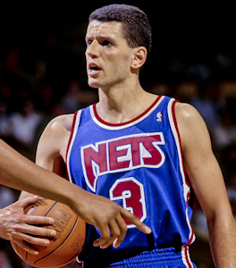

Dražen Petrović

Informacije o Draženu Petroviću
| Država |
Hrvatska |
| Nadimak |
Kapetan |
| Rođenje |
22. listopada 1964. |
|
Šibenik |
| Smrt |
7. lipnja 1993. |
|
Denkendorf, Bavarska, Njemačka |
| Visina |
196 cm |
| Draft |
60. ukupno (1986.) |
|
Portland Trail Blazers |
| Karijera |
1979. – 1993. |
Dražen Petrović (Šibenik, 22. listopada 1964. – Denkendorf, Bavarska, 7. lipnja 1993.), bio je hrvatski košarkaš. Bio je jedan od najvećih hrvatskih i svjetskih košarkaša te je uvršten među 50 osoba koje su najviše pridonijele Euroligi. Spada u red najvećih hrvatskih sportaša. Smatra se predvodnikom vala europskih košarkaša u NBA.
Početci karijere
Svoju sjajnu i trofejima ispunjenu karijeru počeo je sa svega 15 godina kada ga je trener prvoligaškog kluba Šibenke ubacio u igru nakon čega se javnost po prvi puta upoznala s izvanrednim igračem koji će desetljeće poslije obilježiti europsku i svjetsku košarku. Dražen je počeo igrati nakon što je starijem bratu Aleksandru skupljao i dodavao lopte na njegovim treninzima. Ostajao bi poslije treninga sam u dvorani i šutirao sve dok ne padne noć. Kad je počeo igrati u šibenskim kadetima, svoju minutažu za trening samostalno je produljivao i do kasnih sati. Prije škole dolazio je u praznu dvoranu i trenirao, a poslijepodnevni trening zadnji je napuštao. Nevjerojatan talent i nesvakidašnja radišnost za tako malog dječaka nije mogla promaći i vrhunskim stručnjacima. Već tada prognozirali su mu vrhunsku karijeru zamijetivši kako je već u ranoj dobi sposoban preuzeti svu odgovornost za svoju momčad i ako treba, utakmicu riješiti sam.
Klubovi
-
KK Šibenka (1979. – 1983.)
-
KK Cibona (1984. – 1988.)
-
Real Madrid (1988. – 1989.)
-
Portland Trail Blazers (1989. – 1991.)
-
New Jersey Nets (1991. – 1993.)
Kratki pregled športske karijere
-
1977. godina
- Dražen počinje s košarkaškim treninzima.
-
1979. godina
- Dražen počinje igrati za kadete te u isto vrijeme trenira s prvom seniorskom momčadi. Njegov brat Aleksandar odlazi u Cibonu Zagreb.
-
1980. godina
- Juniorska jugoslavenska reprezentacija – Juniorsko europsko prvenstvo u Turskoj: Dražen osvaja brončanu medalju.
-
1981. godina
- Kadetska jugoslavenska reprezentacija – Kadetsko balkansko prvenstvo u Grčkoj: Dražen osvaja zlatnu medalju
- Kadetska reprezentacija – Kadetsko europsko prvenstvo u Grčkoj: Dražen osvaja 5. mjesto
- Dražen se polako ustaljuje u prvoj momčadi Šibenke.
-
1982. godina
- Šibenka Finale Kupa Koraća – Šibenka gubi od Limogesa. Dražen u početnoj postavi.
- Juniorska jugoslavenska reprezentacija – Juniorsko europsko prvenstvo u Grčkoj: Dražen osvaja zlatnu medalju.
- Jugoslavenska reprezentacija: Prva utakmica za reprezentaciju protiv Italije.
-
1983. godina
- Šibenka – finale državnog prvenstva: Dražen pogađa dva slobodna bacanja i donosi Šibenci prvi naslov prvaka države. Dva dana kasnije prvenstvo joj je oduzeto i dodijeljeno Bosni za zelenim stolom.
- Šibenka: Dražen predvodi Šibenku u drugo finale Kupa Koraća, ali opet gube od Limogesa.
-
1984. godina
- Dražen prelazi u Cibonu Zagreb.
- Olimpijske igre u Los Angelesu. Dražen osvaja brončanu medalju. Trener Mirko Novosel.
-
1985. godina
- Grčka: Europsko klupsko finale, Cibona pobjeđuje Real Madrid 87:78. Dražen postiže 36 koševa.
- Finale državnog play-offa: Cibona – Crvena zvezda Beograd 2:1. Utakmica #1 – 97:88; Utakmica #2 – 89:92; Utakmica #3 – 119:106. Dražen postiže 32 koša u trećoj utakmici.
- Finale Kupa: Cibona pobjeđuje Jugoplastiku Split 104:83. Dražen postiže 39 koševa.
- Sveučilišne igre u Japanu: peto mjesto. Trener: Krešimir Ćosić
-
1986. godina
- Cibona: Klupsko europsko finale u Budimpešti, Cibona pobjeđuje Žalgiris Kaunas 94:82. Dražen postiže 22 koša.
- Finale Kupa: Cibona pobjeđuje Bosnu Sarajevo 110:98. Dražen postiže 46 koševa.
- Finale državnog play-offa: Cibona izgubila od Zadra 1:2. Cibona završila sezonu s 21 pobjedom i 1 porazom. Utakmica #1 – 84:70; Utakmica #2 -73:84; Zadar je pobijedio Cibonu u trećoj utakmici nakon produžetaka 110:111
- Jugoslavenska reprezentacija – Svjetsko prvenstvo u Španjolskoj. Dražen osvaja brončanu medalju. Trener Krešimir Ćosić.
- Izabran od Portland Trail Blazersa u trećem krugu – sveukupno 60 izbor.
-
1987. godina
- Cibona: Državno prvenstvo. Iako je Cibona srušila vlastiti rekorod s 22 pobjede i nula poraza, poražena je u polufinalu protiv Crvene zvezde s 2:1. Utakmica #1 – 92:74. Utakmica #2 – 92:94. Utakmica #3 – 103:104. Dražen postiže 48 koševa u trećoj utakmici.
- Finale Europskog kupa: Cibona pobjeđuje Scavolini iz Pesara 89:74. Dražen postiže 28 koševa.
- Sveučilišne igre u Zagrebu. Dražen osvaja zlatnu medalju.
- Jugoslavenska reprezentacija – Europsko prvenstvo u Grčkoj. Dražen osvaja brončanu medalju. Trener Krešimir Ćosić
-
1988. godina
- Cibona Finale Kupa: Cibona pobjeđuje Jugoplastiku 82:80.
- Finale Kupa Koraća: Cibona izgubila od Real Madrida.
- OI u Seoulu 1988: osvojena srebrna medalja. Trener Dušan Ivković.
- Dražen prelazi u Real Madrid.
-
1989. godina
- Real Madrid Finale Kupa Španjolske: Real pobjeđuje Barcelonu
- Državno prvenstvo Španjolske: Real Madrid je izgubio petu odlučujuću utakmicu protiv Barcelone.
- Finale europskog kupa: Real pobjeđuje Snaidero iz Caserte. Dražen postiže 62 koša.
- Jugoslavenska reprezentacija – Europsko prvenstvo u Zagrebu: Dražen osvaja zlatnu medalju. Najbolji igrač prvenstva.
-
1990. godina
- Dražen prelazi u Portland Trail Blazerse, nije previše igrao prvu sezonu u NBA. U prosjeku 12,6 minuta te 7,6 koševa po utakmici.
- Jugoslavenska reprezentacija – Svjetsko prvenstvo u Buenos Airesu: Dražen osvaja zlatnu medalju. Trener Dušan Ivković
-
1991. godina
- New Jersey Nets. Dražen prelazi u New Jersey Netse. Dražen igra u prosjeku 16,6 minuta te postiže 10,2 koševa po utakmici.
-
1992. godina
- New Jersey Nets. Druga sezone u Netsima donijela je Draženu par priznanja: nominaciju za igrača koji je najviše napredovao u NBA. Dražen je predvodio Netse s 20,6 koševa po utakmici, te cijelu NBA ligu (braniče) s 50,8 posto šuta iz igre. Također, predvodio je Netse u postotku šuta iz igre s 50,8 posto te slobodnih bacanja 80,8 posto.
- Hrvatska reprezentacija – Olimpijske igre u Barceloni: Dražen i Hrvatska osvojili su srebrnu medalju igrajući protiv Dream Teama predvođenog igračima kao što su Michael Jordan, Magic Johnson, Larry Bird...
-
1993. godina
- New Jersey Nets. Najbolja sezone karijere. Izabran u treću postavu NBA. Predvodio sve braniče NBA u postotku šuta iz igre s 51,8 posto, te Netse u koševima (22,3), postotku šuta (51,8) i postotku slobodnih bacanja (87,0 posto). Najviše koševa u NBA ligi Dražen postiže protiv Houstona, 44 koša.
- Hrvatska reprezentacija – Kvalifikacije za europsko prvenstvo: Draženova posljednja utakmica. Hrvatska – Slovenija (90:94, 6. lipnja 1993. godine, Dražen je postigao 30 poena) u Wroclawu, Poljska.[5]
-
2002. godina
- Uvršten je u Košarkašku Kuću slavnih.
Muzejsko memorijalni centar Dražen Petrović
Legende Real Madrida - Dražen Petrović
Wikipedia - Dražen Petrović
Nagrade i dostignuća
| Tip natjecanja |
Medalja |
Godina |
Zemlja |
| Olimpijske igre |
bronca |
Los Angeles 1984. |
Jugoslavija |
|
srebro |
Seoul 1988. |
Jugoslavija |
|
srebro |
Barcelona 1992. |
Hrvatska |
| Svjetska prvenstva |
bronca |
Madrid 1986. |
Jugoslavija |
|
zlato |
Buenos Aires 1990. |
Jugoslavija |
| Europska prvenstva |
bronca |
Atena 1987. |
Jugoslavija |
|
zlato |
Zagreb 1989. |
Jugoslavija |